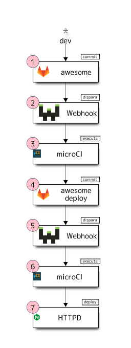

Tutorial mkdocs servidor
Introdução
Depois de executar o microCI localmente no tutorial anterrior, podemos
começar a automação da pipeline através de webhooks e execução remota.
Neste tutorial será mostrado como, a partir de um commit no repositório de
trabalho, é gerada a versão final e disponibilização em produção.
A execução se dará conforme a figura abaixo:

Evento inicial: O desenvolvedor atualiza a documentação realiza um commit
e envia para o servidor git.
Passo 1: O servidor git recebe o evento de push com os commits do
usuário e dispara um webhook vinculado ao repositório.
Nota: o evento de
pushocorre uma única vez mesmo que este contenha várioscommits.
Passo 2: O servidor de webhook recebe as informações do último commit e
executa um script vinculado ao webhook.
Nota: o servidor de
webhookutilizado neste exemplo pode ser obtido em https://github.com/adnanh/webhook.
Abaixo estão a declaração dois webhooks usados neste tutorial:
# Disparado no passo 2
- id: "microCI_awesome"
execute-command: "/usr/bin/microCI.sh"
command-working-directory: "/opt/microCI/repos/awesome/"
# Disparado no passo 5
- id: "microCI_awesome_deploy"
execute-command: "/usr/bin/microCI.sh"
command-working-directory: "/opt/microCI/repos/awesome_deploy/"
Nota: todos os webhooks executam o mesmo script
Passo 3: Uma implementação mínima do script de adaptação do webhook para o microCI pode ser vista a seguir:
#!/bin/bash
# Arquivo microCI.sh
# Acrescente suas personalizações aqui
if [ -d ".git" ]; then
git pull
fi
# Este comando é executado no caminho do repositório
microCI | bash
Nota: O procedimento é idêntico ao executado localmente: o
microCIlê a configuração do arquivo.microCI.ymle executa os passos descritos.
# Arquivo .microCI.yml do repositório awesome
---
steps:
- name: "Construir documentação em formato HTML"
description: "Documentação do projeto"
plugin:
name: "mkdocs_material"
action: "build"
- name: "Publicar HTML para repositório git"
ssh:
copy_from: "${HOME}/.ssh"
copy_to: "/root/.ssh"
plugin:
name: "git_publish"
git_url: "git@nome_do_servidor.com.br:awesome_deploy.git"
copy_to: "/deploy"
copy_from: "site"
clean_before: true
O plugin mkdocs_material com a ação build lê os arquivos markdown
e constroi a documentação em formato HTML e a salva na pasta site para ser
utilizada no próximo passo.
O plugin git_publish clona o repositório apontado por git_url na pasta
/deploy, então copia o conteúdo da pasta site para a pasta /deploy,
dentro do container, e faz o commit para atualizando o repostório.
Passo 4: O repositório awesome_deploy recebe o post lançado pelo
plugin git_publish no passo anterior e dispara outro webhook.
Passo 5: O servidor de webhook recebe as informações do último commit e
executa um script vinculado ao webhook.
# Disparado no passo 5
- id: "microCI_awesome_deploy"
execute-command: "/usr/bin/microCI.sh"
command-working-directory: "/opt/microCI/repos/awesome_deploy/"
Nota: executa o procedimento igual ao do passo 2, mas desta vez na pasta do repositório
awesome_deploy.
Passo 6: O microCI executa o plugin git_deploy que realiza o checkout
do repositório na pasta de implantação. Para garantir que o histórico com os
commits antigos não estarão disponíveis em produção o checkout é realizado de
forma dividida, ficando o histórico (.git) em uma pasta privada e somente os
arquivos do último commit no caminho de deploy especificado.
Passo 7: A pasta de deploy atualizada no passo anterior está disponível
em produção.